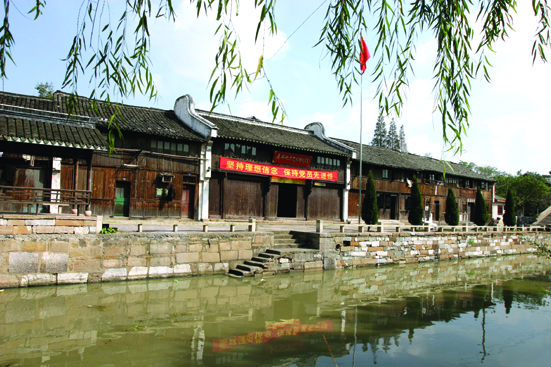

嘉兴市文物保护网 · 市级文物保护单位 · 2014-06-17 · 原文

吴润昭私院位于嘉兴市秀洲区新塍镇东北大街，据当地文化站同志介绍，建于清太平天国时期。吴氏祖籍江苏吴江盛泽镇，为该镇丝业巨商之一。吴氏以五万银元购得从问松桥西堍至吴家弄、南临市河、北达秀水浜的地块，并建此院。私院坐北朝南，砖木结构，原有五进，现存四进，前三进为陈列馆，第四进被火烧毁后新建楼房，第五进未划入陈列馆。陈列馆布局中轴对称，占地500余平方米。通面阔12.25米，通进深44.92米。第一进为二层三开间楼房，抬梁和穿枋式并用，五檩，牛腿雕饰狮子，地面铺设方砖，二楼为办公室。其北面设东、西厢房，厢房北侧有砖雕门楼，上刻有“孝友传家”四字。第二进为三开间，原为大厅，用料较大，抬梁式五檩，前后各双步，用四柱，方形斗拱，檐柱饰有垂花柱，月梁及枋上雕刻精细，隔扇窗户完整，柱础无纹饰，地面铺设方砖，现作为展厅使用。第三进为三开间二层楼房，用料较大，抬梁式五檩，前后各双步，用四柱，梁枋上雕工精细，扇页浮雕有《西厢记》，柱础无纹饰，地面铺设方砖，现作为展厅。天井两侧有马头墙，西侧有披弄。吴氏民居保存较好，形制规模较大，做工考究，梁枋雕刻精美，对研究本地的近代居民建筑具有重要意义，有很高的历史、艺术和科学价值。2009年公布为嘉兴市级文物保护单位。